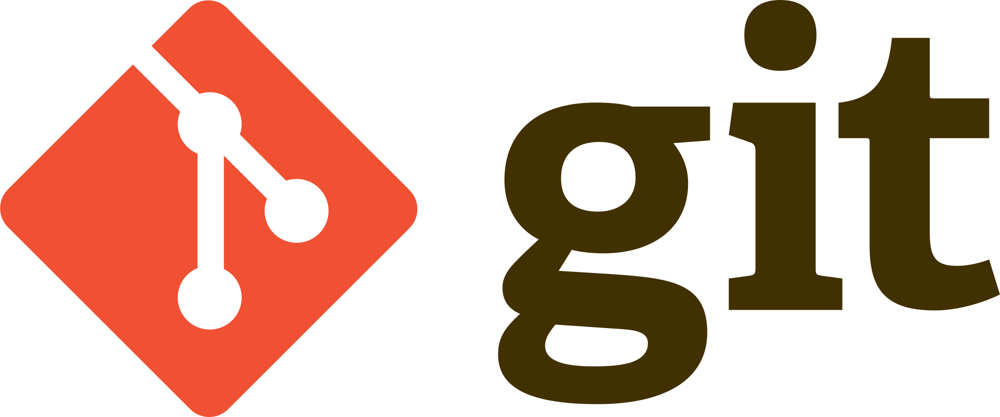

est un logiciel de gestion de versions décentralisé. C'est un logiciel libre créé par Linus Torvalds, auteur du noyau Linux, et distribué selon les termes de la licence publique générale GNU version 2. Le principal contributeur actuel de git et depuis plus de 16 ans est Junio C Hamano. En 2016, il s’agit du logiciel de gestion de versions le plus populaire qui est utilisé par plus de douze millions de personnes
Quelques commandes
Git dispose notamment des commandes suivantes :
git init- crée un nouveau dépôt ;git clone- clone un dépôt distant ;git add- ajoute de nouveaux objets blobs dans la base des objets pour chaque fichier modifié depuis le dernier commit. Les objets précédents restent inchangés ;git commit- intègre la somme de contrôle SHA-1 d'un objet tree et les sommes de contrôle des objets commits parents pour créer un nouvel objet commit ;git branch- liste les branches ;git merge- fusionne une branche dans une autre ;git rebase- déplace les commits de la branche courante devant les nouveaux commits d’une autre branche ;git log- affiche la liste des commits effectués sur une branche ;git push- publie les nouvelles révisions sur le remote. (La commande prend différents paramètres) ;git pull- récupère les dernières modifications distantes du projet (depuis le Remote) et les fusionne dans la branche courante ;git stash- stocke de côté un état non commité afin d’effectuer d’autres tâches ;git checkout- annule les modifications effectuées, déplacement sur une référence (branche, hash) ;git switch- changement de branche ;git remote- gestion des remotes.
Sites d’hébergement
Il existe différents sites (également appelées forges) généralistes d'hébergement, ainsi que des sites dédiés à des développements en particulier, acceptant des projets liés d'utilisateur, comme l'instance cgit de Kernel.org (noyau Linux) ou les instances Gitlab de Freedesktop.org, Gnome, KDE ou encore de Blender.
- Framagit, site communautaire associatif libre de Framasoft, basé sur Gitlab.
- GitHub est un service web d'hébergement et de gestion de développement de logiciels développé en Ruby on Rails et Erlang, qui appartient à Microsoft depuis juin 2018 ;
- GitLab.com équivalent à GitHub et développé en Ruby, évolution du code du service Gitorious, racheté en mars 2015, le code source est disponible et utilisé par différentes autres forges ;
- GNU Savannah, permettant également l'utilisation de Mercurial, dépôt officiel de la Free Software Foundation ;
- SourceForge.net, probablement le plus ancien, ouvert en 1999, il utilisait CVS à ses débuts, avant de passer à Subversion (SVN), puis récemment à Git également. Il utilise aujourd'hui Apache Allura .
Cadre projet web app
Dans le cadre de notre projet, nous utiliserons indifféremment GitHub et GitLab.